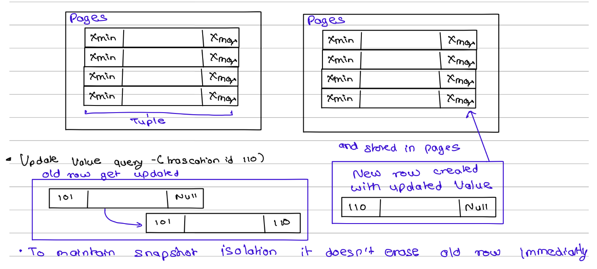
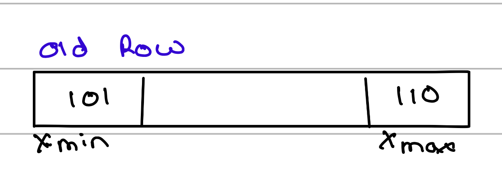
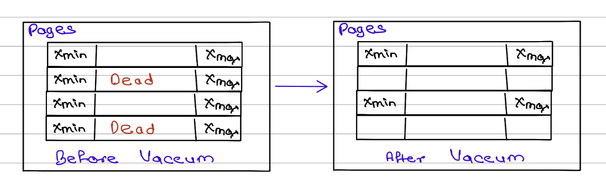
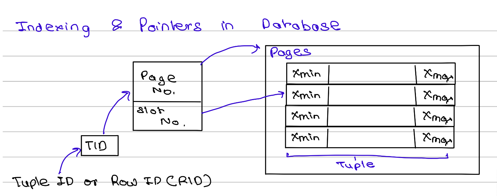
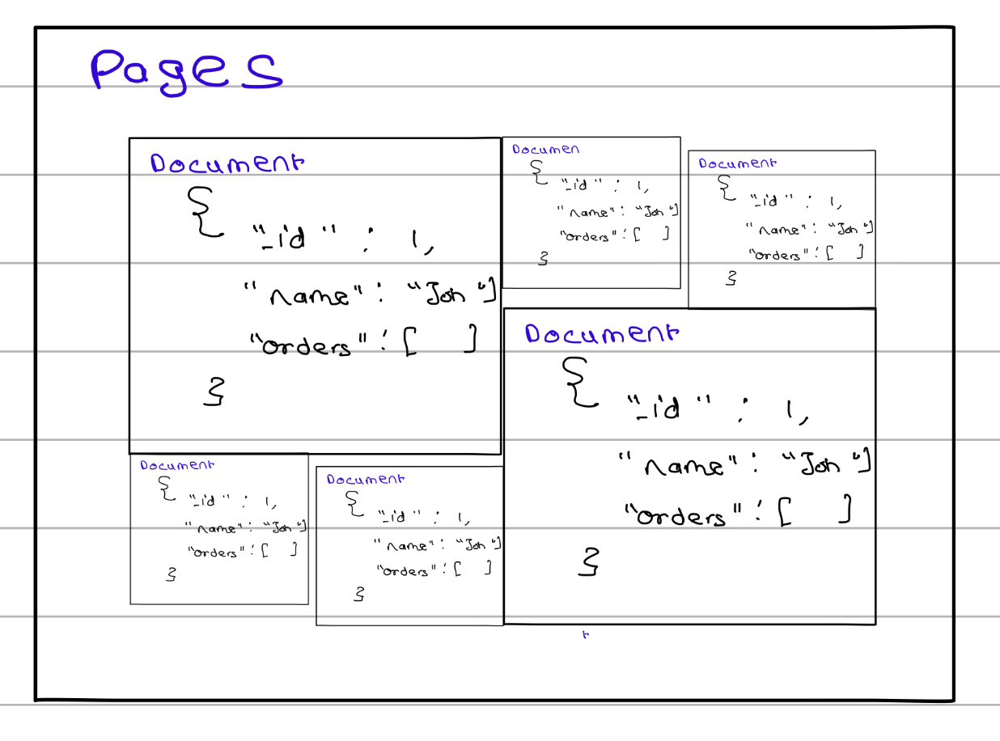

Introduction
Data is at the heart of every modern application, from social media platforms and online stores to banking systems and healthcare software. To store, organise, and retrieve this data efficiently, organisations rely on databases.
When discussing databases, two major categories often come up: SQL databases and NoSQL databases. While both are designed to store and manage data, they do so in different ways and are suited for different types of applications.
This guide explains SQL and NoSQL databases in simple terms, explores how they work behind the scenes, and helps you understand when to choose one over the other.
What Is a Database?
A database is an organised collection of data that allows applications to store, retrieve, update, and manage information efficiently.
For example:
- An e-commerce website stores customer information, products, and orders.
- A banking application stores account details and transaction history.
- A social media platform stores posts, comments, and user profiles.
The database acts as the system that keeps all this information organised and accessible.
Understanding SQL Databases
SQL (Structured Query Language) databases are also known as relational databases because they organise data into tables with rows and columns.
Popular SQL databases include:
- PostgreSQL
- MySQL
- Oracle Database
- Microsoft SQL Server
How Data Is Stored
In a relational database:
- Data is stored in tables.
- Each row represents a record.
- Each column represents a specific attribute.
Example: A users table in SQL database
| Customer ID | Name | |
|---|---|---|
| 101 | John | john@example.com |
| 102 | Sarah | sarah@example.com |
The structure of the table is defined beforehand using a schema.
Key Characteristics of SQL Databases
1. Fixed Schema
One of the key characteristics of SQL databases is their predefined schema. The database enforces rules about the structure of the data, including which columns are present and the data type allowed in each column. This ensures consistency across records. Later, we'll explore how NoSQL databases take a different approach to managing data structure.
This is why an update can look like this:
CREATE TABLE Customer (
CustomerID INT PRIMARY KEY,
Name VARCHAR(100) NOT NULL,
Email VARCHAR(255) NOT NULL UNIQUE
);
Benefits
- Consistent data structure: Every row follows the same format. If a column is defined as a number, only numeric values can be stored in it, ensuring consistency across the table.
- Strong data validation: The database automatically enforces rules such as data types and constraints, reducing the chances of incorrect data being entered.
- Easier reporting and analytics: Because the data is structured and predictable, writing queries, generating reports, and performing analysis becomes much simpler.
Drawbacks
- Less flexibility: Since the schema is predefined, changing the structure of the database later can be challenging, especially when dealing with large amounts of data and existing applications that depend on that schema.
2. ACID Transactions
1. Atomicity
A transaction either completes entirely or does not happen at all. There is no partial completion.For example, suppose you transfer ₹100 from Person A's account to Person B's account. The transaction involves two operations:
- 1. Deduct ₹100 from Person A's account.
- 2. Add ₹100 to Person B's account.
If either operation fails, the entire transaction is rolled back. The database ensures that you never end up in a situation where money is deducted from A but not added to B.
2. Consistency
Consistency ensures that the database always remains in a valid state before and after a transaction. For example, if a business rule states that an account balance cannot be negative, the database will prevent a transaction that would violate that rule. If Person A has only ₹50, a transaction attempting to transfer ₹100 will be rejected, keeping the data consistent.
3. Isolation
Isolation ensures that multiple transactions running at the same time do not interfere with each other.
For example, while one transaction is updating account balances or performing complex joins, another user may still be able to read the previously committed version of the data. This prevents users from seeing incomplete or partially updated information.
Modern databases use techniques such as locking and Multi-Version Concurrency Control (MVCC) to achieve isolation. We will explore these mechanisms in more detail later in the blog.
4. Durability
Durability guarantees that once a transaction is committed, its changes are permanently stored and will survive system crashes, power failures, or server restarts.
For example, after a successful money transfer is committed, the updated balances should remain intact even if the database server crashes immediately afterward.
Databases achieve this using mechanisms such as Write-Ahead Logging (WAL), where changes are first recorded in a log before being written to the actual data files. We will discuss WAL and durability in greater depth later in this blog.
This makes SQL databases ideal for:
- Banking systems
- Financial applications
- Payment processing
- Inventory management
3. Relationships Between Data
Relational databases are excellent at managing connected data. They can easily link related information, such as customers, orders, and products, using relationships between tables, making them ideal for applications with complex data connections.
Internal Concepts in SQL Databases
Many beginners focus only on tables and queries, but several important mechanisms work behind the scenes.

Pages and Storage
Relational databases store data in fixed-size blocks called pages, and each page can hold multiple rows (also known as tuples). Instead of storing every row separately, grouping rows into pages makes disk access and memory management more efficient.
As shown in Figure, a table is physically stored as a collection of pages, with each page containing multiple tuples. This page-based organisation helps databases optimise storage usage and improve read performance.
Multi-Version Concurrency Control (MVCC)
Modern relational databases such as PostgreSQL use Multi-Version Concurrency Control (MVCC) to handle concurrent reads and writes efficiently.
PostgreSQL stores additional metadata with every row in the form of hidden system columns. Two important system columns are xmin, which records the transaction that created the row version, and xmax, which records the transaction that invalidated it. These columns are used internally by MVCC to determine which version of a row should be visible to a transaction.
For example, in Figure, a row created by transaction 101 initially has xmax = NULL, indicating that it is the active version. When transaction 110 updates the row:
- The original row's xmax is set to 110, indicating that transaction 110 replaced it.
- A new row version is created with xmin = 110 and xmax = NULL, representing the updated and currently active version.
The old version is not removed immediately because other transactions may still need to read it. This behaviour allows the database to provide snapshot isolation, where each transaction sees a consistent view of the data.
Dead Tuples and Database Bloat
As shown in Figure, when a row is updated, PostgreSQL does not overwrite the existing row. Instead, it creates a new row version and marks the old version as no longer active by setting its xmax value.
Initially, the old row cannot be removed because some running transactions may still need to read it. However, once there are no active transactions that can see that old row version, it becomes a dead tuple (also called an expired row version).
Over time, frequent updates and deletes can leave behind many dead tuples, consuming disk space and reducing performance. This accumulation of unused row versions is known as database bloat.
Automatic Cleanup (VACUUM)
To prevent database bloat, PostgreSQL runs a background cleanup process called VACUUM.
VACUUM periodically scans pages and checks whether old row versions are still needed by any active transaction. If there is no transaction whose snapshot can see a row version between its xmin and xmax, that row version is considered dead and can be safely removed.
For example:

If all transactions that started before transaction 110 have completed, this row version is no longer visible to anyone, and VACUUM can reclaim its space
Benefits of VACUUM include:
- Recovering reusable storage space
- Improving query performance
- Reducing database bloat
- Keeping tables and indexes efficient
Free Space Management
After VACUUM removes dead tuples, PostgreSQL does not immediately return that space to the operating system. Instead, it marks the freed locations as available for future inserts and updates.
The database tracks these available locations using a structure called the Free Space Map (FSM).
A simplified view looks like this:

Hotel Front Desk Analogy
A useful way to think about the Free Space Map is as a hotel's front desk.
- Each database page is like a hotel floor containing rooms.
- Each row is like a guest occupying a room.
- When a guest checks out, the room becomes vacant.
- The front desk maintains a list of vacant rooms (the Free Space Map).
When a new guest arrives, the hotel first checks its vacancy list and assigns an empty room. Only when every room is occupied does the hotel build a new wing.
Similarly, when a new row is inserted, PostgreSQL first checks the Free Space Map for available slots. It only allocates additional storage when no reusable space is available.
Indexing in SQL Databases
Now you know how data is stored inside pages and tuples. However, there is one problem: whenever a search query is executed, the database cannot scan every page and every tuple to find the required row. That approach would become extremely slow as the amount of data grows.
To solve this problem, databases use a specialized data structure called an index. Most relational databases implement indexes using a B+ Tree, which allows the database to quickly locate the required data without scanning the entire table.
The index does not usually store the complete row. Instead, it stores:
- The indexed value
- A Tuple ID (TID) or Row ID (RID) that points to the row's physical location
As shown in Figure, the TID contains information such as the page number and slot number where the tuple is stored. When a query searches for a value, the database first traverses the B+ Tree to find the corresponding TID. It then follows that pointer directly to the page and tuple containing the actual data.

This approach makes searches much faster because the database only needs to traverse the index and jump directly to the required row instead of scanning every page in the table.
Benefits of B+ Trees:
- Fast lookups
- Efficient range queries
- Balanced performance for inserts, updates, and deletes
- Scales well for large datasets
This is why B+ Tree indexes are the default indexing structure in most relational databases.
Document Databases: A Common NoSQL Model
Unlike relational databases, which store data in rows and columns, MongoDB stores data as documents in a format called BSON (Binary JSON). A document is a self-contained data structure that can store related information together, including nested objects and arrays.

As shown in Figure, documents are still stored inside pages on disk, but unlike SQL rows, each document can have a different size and structure. For example, a user document can contain fields such as name, address, and an embedded list of orders, all within a single document.
One of the biggest advantages of MongoDB is its flexible schema. Documents within the same collection do not need to have identical fields. For example, one document may contain only a name, while another may contain a name, phone number, address, and orders. This flexibility makes it easier to evolve the data model as application requirements change.
Because related data can be embedded directly inside a document, MongoDB often reduces the need for complex joins that are common in relational databases. Operations are also atomic at the document level, meaning changes to a single document either succeed completely or fail completely. These characteristics make document databases well-suited for applications with rapidly changing requirements, user profiles, product catalogs, content management systems, and other semi-structured data workloads.
Example document:
{
"name": "John Doe",
"phone": "123-456-7890",
"address": {
"street": "123 Main St",
"city": "Anytown",
"state": "CA"
},
"orders": [
{
"order_id": 1,
"product": "Laptop",
"quantity": 1
}
]
}As illustrated in Figure 3, documents of varying sizes can coexist within the same collection and are packed into pages based on the space they require, providing greater flexibility than the fixed row structure used in relational databases.
Similarities Between SQL and NoSQL Databases
Although SQL and NoSQL databases differ in how they model data, modern database systems share many of the same underlying storage and performance concepts.
Pages on Disk
Both SQL and NoSQL databases store data on disk using fixed-size pages. A page acts as the basic unit of storage and can contain multiple rows, documents, or records. Organizing data into pages makes disk access more efficient and simplifies memory management.
Buffer Pool
Accessing data directly from disk is relatively slow. To reduce disk I/O, databases use a buffer pool, which is an area of memory (RAM) used to cache frequently accessed pages.
When a query requests data, the database first checks whether the required page is already present in the buffer pool. If it is, the data can be returned immediately without reading from disk. Otherwise, the page is loaded from disk into memory.
You can think of the buffer pool as a cache for database pages.
Benefits:
- Faster query execution
- Reduced disk reads
- Better overall performance
- Improved scalability under heavy workloads
Write-Ahead Logging (WAL)
Modern databases must ensure that committed data is not lost even if the system crashes. To achieve this, many databases use Write-Ahead Logging (WAL).
The core idea is simple:
- Write the change to a log file.
- Confirm that the log has been safely stored.
- Apply the change to the actual data pages later.
For example, if a bank transfer updates an account balance, the update is first recorded in the WAL. Even if the server crashes before the data page is written to disk, the database can replay the log during recovery and restore the committed changes.
Benefits:
- Crash recovery
- Data durability
- Improved reliability
- Protection against data loss
Indexing
Both SQL and NoSQL databases use indexes to speed up data retrieval. Instead of scanning every row or document, an index allows the database to quickly locate the required records.
Many databases use B+ Trees as their default indexing structure, although some NoSQL databases may also use hash indexes, LSM trees, or other specialized structures depending on their workload.
Benefits:
- Faster searches
- Efficient range queries
- Reduced query execution time
- Better performance on large datasets
SQL vs NoSQL: Side-by-Side Comparison
| Feature | SQL | NoSQL |
|---|---|---|
| Data Model | Tables and rows | Documents, key-value, graph, column-family |
| Schema | Fixed | Flexible |
| Relationships | Strong support | Often embedded within documents |
| Transactions | Full ACID support | Usually document-focused |
| Scalability | Traditionally vertical | Often designed for horizontal scaling |
| Data Consistency | Strong consistency | May offer flexible consistency models |
| Best For | Structured data | Rapidly changing or semi-structured data |
When Should You Choose SQL?
SQL databases are a good choice when your application requires strong data consistency, reliable transactions, and well-defined relationships between data. They work best when the structure of the data is relatively stable and complex queries, reporting, or analytics are important requirements.
Typical use cases include:
- Banking and financial systems
- Accounting software
- Enterprise Resource Planning (ERP) systems
- Airline, hotel, and ticket reservation systems
When Should You Choose NoSQL?
NoSQL databases are a better fit when your application needs flexibility, scalability, and the ability to handle rapidly changing data structures. They are particularly useful for large-scale distributed systems, high-traffic applications, and workloads that require fast read and write operations.
Typical use cases include:
- Social media platforms
- Content management systems
- Real-time analytics applications
- Internet of Things (IoT) systems
Common Misconceptions
- "NoSQL is always faster than SQL." – This is one of the most common misconceptions. Performance depends on factors such as the data model, query patterns, indexing strategy, and hardware resources. A well-designed SQL database can easily outperform a poorly designed NoSQL database, just as a properly modelled NoSQL database can outperform SQL for certain workloads. The right choice depends on the problem being solved, not on the database category alone.
- "SQL databases cannot scale." – While SQL databases were traditionally associated with vertical scaling (adding more resources to a single server), modern SQL databases support various scaling techniques such as replication, partitioning (sharding), read replicas, and distributed architectures. Many large-scale applications successfully run on SQL databases handling millions of users and transactions.
- "NoSQL databases have no schema or structure." – NoSQL databases are not schema-less; they are more accurately described as schema-flexible. The structure is often enforced at the application level rather than strictly by the database. Documents, key-value pairs, or other data models still follow an organised structure, but developers have more freedom to evolve that structure over time.
- "SQL and NoSQL are competing technologies." – SQL and NoSQL databases are designed to solve different problems and are often used together within the same application. For example, a company might use a SQL database for financial transactions and a NoSQL database for user activity logs or product recommendations. Choosing one does not necessarily mean excluding the other.
- "NoSQL databases do not support transactions." – Early NoSQL databases often prioritised scalability over transactional guarantees, which led to this misconception. Today, many NoSQL databases, including MongoDB, support transactions and atomic operations. However, the scope and implementation may differ from the ACID transactions commonly found in relational databases.
- "Indexes are only important in SQL databases." – Both SQL and NoSQL databases rely heavily on indexes for performance. Without proper indexing, queries can become slow regardless of the database type. The underlying indexing structures may differ, but the goal remains the same: efficiently locating data without scanning the entire dataset.
Conclusion
By now, you should have a better understanding of both SQL and NoSQL databases, including how they store data, handle updates, manage concurrency, use indexes, and ensure reliability. More importantly, you should have a clearer idea of the types of problems each database is designed to solve.
Choosing between SQL and NoSQL is not about deciding which one is better; it is about selecting the right tool for your specific requirements. If your application requires strong consistency, reliable transactions, and well-defined relationships, SQL is often the better choice. If flexibility, scalability, and rapidly evolving data models are more important, NoSQL may be a better fit.
However, this is only part of the story. In real-world systems, database selection involves many additional considerations, such as scalability requirements, data access patterns, operational complexity, team expertise, and infrastructure constraints. In fact, many modern applications use both SQL and NoSQL databases together, leveraging the strengths of each where they make the most sense.
Understanding these fundamentals provides a solid foundation, and as you dive deeper into database internals and distributed systems, you'll discover that database design is often about balancing trade-offs rather than finding a one-size-fits-all solution.